User Manual: Oracle¶
Basics¶
Data representation¶
Bingo supports the following molecule formats:
- Daylight SMILES with ChemAxon extensions
- Daylight SMARTS
- MDL (Symyx) Molfile
- GZip-compressed Molfile
- CML
- Internal binary format
Bingo supports the following reaction formats:
- Daylight reaction SMILES with ChemAxon Extensions
- Daylight reaction SMARTS
- MDL (Symyx) Rxnfile
- GZip-compressed Rxnfile
- CML
- Internal binary format
Daylight Formats with ChemAxon Extensions¶
Almost all features of the original Daylight SMILES format are supported, including:
- Aromatic rings
- Hydrogen counters
- Tetrahedral and allene-like stereocenters
- Cis-trans double bonds
- Disconnected structures
- Reaction atom-to-atom mapping (AAM)
The only features that are not supported are:
- Square-planar, trigonal-bipyramidal, octahedral stereo configurations
Almost all features of the original Daylight SMARTS format are supported, including:
- Aromatic and aliphatic atoms
- SSSR (smallest set of smallest rings) calculation
- Logical operators
- Atom environments (nested SMARTS)
- Component-level grouping
The only features that are not supported are:
- Constraint “h” (implicit hydrogen count). Hydrogens can be stored implicitly or explicitly in the database, and we believe that this difference should not affect the search results. “H” (total hydrogen count) may be used instead
- All features of SMILES format that are not supported
The following ChemAxon SMILES extensions are supported:
- Radical numbers: monovalent, divalent singlet, and divalent triplet
- Stereogroups
- Pseudo-atoms (atom aliases)
- Fragment level grouping in reactions
MDL Formats¶
MDL (Symyx) Molfiles and Rxnfiles are supported by Bingo. Both format versions (2000 and 3000) are supported. Almost all format features are supported, including:
- Pseudo-atoms (atom aliases)
- Stereogroups
- R-Groups (Markush queries)
- Query atoms and query bonds
- Various query flags on atoms and bonds
- Atom positions
- 3D constraints in v2000 Molfiles
- Reaction atom-to-atom mapping (AAM)
- Reacting centers and stereo inv/ret flags
The only features that are not supported are:
- SGroups and polymers
- 3D constraints in v3000 Molfiles
MDL (Symyx) SDfile format (.sdf) is supported for export from user tables. SDFile, RDfile (.rdf), and multiline SMILES formats are supported for import to user tables.
Internal Binary Formats¶
Internal Bingo binary molecule and reaction formats are designed exclusively for database molecules and reactions, but not for queries. All the molecule and reaction features that are not query features are supported, including:
- Pseudo-atoms
- Aromatic rings
- Tetrahedral stereocenters, allene stereo, stereogroups, and cis-trans double bonds
- Reaction atom-to-atom mapping (AAM)
- Reacting centers and stereo inv/ret flags
- Atom positions (optional)
Storage¶
Choosing the format¶
If you have a database table with Molfiles, we recommend that you use:
- Molfiles if you are too busy to convert anything and not so interested in performance. Performance will be acceptable anyway.
- SMILES if you are interested in performance but do not undertake 3D searches and do not use the highlighting feature frequently.
- Internal binary format if you are interested in performance and need 3D searches or use the highlighting feature often.
- GZip-compressed Molfiles if you are interested in performance but not allowed to use any format other that Molfile. Normally, you would not need that option.
If you have a database table with Rxnfiles, the recommendations are the same, but please note that the reaction SMILES format does not contain the reacting centers information. So if you need the reacting centers in the database reactions, use Rxnfiles or binary format. If you do not use the highlighting frequently, you can choose not to save atom positions.
Choosing the Oracle Data Type¶
For molecule and reaction storage, Bingo supports the following Oracle data types equally well:
- Character Large Object (CLOB)
- Binary Large Object (BLOB)
- String (VARCHAR2), limited to 4000 characters by Oracle
We recommend that you use:
- CLOB for Molfiles and Rxnfiles
- VARCHAR2 for SMILES and reaction SMILES
- BLOB for binary format or GZip-compressed data
However, you can use any data type for any of the supported formats. Please consider the limitation of VARCHAR2 to 4000 characters. This number of characters is more than enough for SMILES, but usually it is not enough for Molfiles and Rxnfiles.
Mixing formats¶
Mixing different formats in the database is not a problem. For example, you can insert SMILES string to CLOB column that contains Molfiles.
Conversion¶
You can convert molecules and reactions from any format to any other
format using Bingo operators, namely Molfile(), Rxnfile(),
SMILES(), RSMILES(), CompactMolecule(),
CompactReaction(), Zip(), and Unzip(). See below for
details.
Note: Conversion operators work only for target (database) molecules and reactions. Query features are not supported for conversion.
Performance Notice¶
Oracle stores table data in cached blocks in a row-wise manner. That means, the more data in each row, the more blocks that Oracle has to read from disk to fetch one column with molecule or reaction number. In order to minimize the number of blocks (and so minimize the query completion time), you may want to include less data in table rows. This is the reason for using the compact formats like SMILES or Bingo binary format.
Note: If you have both columns with large items (Molfiles/Rxnfiles) and compact items (SMILES/binary) in one table, the query performance will be even worse than with the single Molfile/Rxnfile column. The benefits of compact formats are evident when you separate the compact table from the initial large one.
Indices¶
Creating an Index¶
For a significant increase in the operator performance when querying a table, you can assign a special index on a table field (column) that contains molecules or reactions. CLOB, BLOB, and VARCHAR2 columns are all available for indexing. All queries will return the same set of results with or without the index.
The more records the table contains, the longer it takes to create an index.
Note: Renaming the table after index creation is not allowed.
Index Parameters¶
In some situations you do not need all of the search features. In these cases, you have options for skipping some indexing sub-procedures in order to accelerate the indexing. See below for details.
Monitoring the Index Creation Process¶
You have two options for monitoring the index creation process (which may take quite a long time):
- Viewing the progress of Oracle long operations. Bingo continuously updates the “progress meter” of the long operation during the indexing.
- Viewing the Bingo log file. See below for details.
Updating and Dropping Index¶
You can add, remove, or edit records in the table after the index is created. Adding records does not slow down the queries, i.e. the performance will be the same as if you had indexed the whole table at once. No re- indexing is required after adding the records.
You can drop the index at any time. After the drop, the queries will slow down but return the same results.
Note: Due to technical limitations with Oracle, adding the molecules in an indexed table is slower than indexing the existing molecules. For example, if you have an indexed table with 5000 molecules and if you want to add another 50000, dropping the index before adding and re-creating it would be a good decision. On the other hand, if you have 50000 indexed molecules, adding another 5000 will be faster if you do not re-index.
Note: If you delete or replace substantial amount of records in the indexed table, re-creating the index in order will speed up the queries.
After you insert or update, you must either:
- close the SQL session, or
- execute
Bingo.FlushInserts()procedure.
to make the inserted/updated rows available for other SQL sessions. If there are no other sessions that are using the table you are updating, this is not necessary.
Note: You must call FlushInserts() before doing INSERT or
UPDATE of the same table from another session. If you do another
INSERT or UPDATE concurrently from another session, it will hang
until the first session does FlushInserts() or terminates.
FlushInserts() takes some time, and as a result, it is not included
in the INSERT and UPDATE implementations. You do not need to
call FlushInserts() after each INSERT or UPDATE. It is
normal to call it after you have finished updating the table.
Here is an example:
CREATE INDEX $index ON $table ($column) INDEXTYPE IS Bingo.MoleculeIndex;
INSERT INTO $table (SELECT * FROM $other_table);
EXECUTE BEGIN Bingo.FlushInserts(); END;
Queries¶
You can specify the query molecule as a Molfile (including various query features), or as a SMILES string. For reaction queries, use Rxnfiles or reaction SMILES. As for Oracle data types, CLOB and VARCHAR2 are supported for queries.
Note: In order to make substructure and SMARTS search faster, Bingo loads the indexed molecules into memory. The loading itself takes some time, and as a result, the first substructure or SMARTS query runs slower than all the subsequent ones. The loaded molecules are shared across other SQL sessions, and so other sessions there will not encounter such time lags. The memory is freed as soon as all the sessions working with this table are disconnected.
Molecules¶
Conversion to SMILES¶
The Bingo.SMILES() operator can be used for converting Molfiles and
binary molecules to SMILES. The operator works equally well with CLOB,
BLOB, and VARCHAR2 operands. The operator always returns the VARCHAR2
result.
SELECT Bingo.SMILES($molfile) FROM DUAL;
SELECT Bingo.SMILES($binary) FROM DUAL;
SELECT Bingo.SMILES($column) FROM $table;
Note: If the input molecule is badly formed (i.e. does not conform to format, has drawing mistakes, or has unsupported features), Bingo throws the exception to Oracle.
Converting a Table¶
When you convert a table to SMILES, you have two possibilities for skipping the bad exception-raising molecules:
1. Short option:
CREATE TABLE $newtable AS SELECT $id $newid, Bingo.SMILES($molfile) $smiles FROM $table
WHERE Bingo.CheckMolecule($molfile) IS NULL;
2. Lengthy but faster option:
CREATE TABLE $newtable ($newid NUMBER, $smiles VARCHAR2(4000));
set serveroutput on;
declare
i int := 0;
begin
dbms_output.enable(1000000);
for item in (select $id, $molfile from $table) loop
begin
INSERT INTO $newtable values(item.$id, bingo.SMILES(item.$molfile));
exception
when others then
dbms_output.put_line('Bad molecule '|| item.$id ||': ' || SQLERRM);
end;
i := i + 1;
if i mod 1000 = 0 then
COMMIT;
end if;
end loop;
end;
$table contains Molfiles in the $molfile column and molecule IDs
in the $id column. $newtable contains SMILES in the $smiles
column and molecule IDs in the $newid column.
Conversion to Binary Format¶
The Bingo.CompactMolecule() operator can be used for converting
Molfiles and SMILES to the internal binary format. The operator works
equally well with CLOB, BLOB, and VARCHAR2 operands. The operator always
returns the BLOB result.
SELECT Bingo.CompactMolecule($molfile, $xyz) FROM DUAL;
SELECT Bingo.CompactMolecule($smiles, $xyz) FROM DUAL;
SELECT Bingo.CompactMolecule($column, $xyz) FROM $table;
The $xyz parameter must be 0 or 1. If it is 1, the positions of
atoms are saved to the binary format. If it is zero, the positions are
skipped.
Note: If the input molecule is badly formed (i.e. does not conform to any format, has drawing mistakes, or has unsupported features), Bingo throws the exception to Oracle.
Converting a Table¶
When you convert a table to binary format, you have two possibilities for skipping the bad exception-raising molecules:
1. Short option:
CREATE TABLE $newtable AS SELECT $id $newid, Bingo.CompactMolecule($molfile, $xyz) $binary FROM $table
WHERE Bingo.CheckMolecule($molfile) IS NULL;
2. Lengthy but faster option:
CREATE TABLE $newtable ($newid NUMBER, $binary BLOB) lob($binary) store as (enable storage in row);
set serveroutput on;
declare
i int := 0;
begin
dbms_output.enable(1000000);
for item in (select $id, $molfile from $table) loop
begin
INSERT INTO $newtable values(item.$id, bingo.CompactMolecule(item.$molfile, $xyz));
exception
when others then
dbms_output.put_line('Bad molecule '|| item.$id ||': ' || SQLERRM);
end;
i := i + 1;
if i mod 1000 = 0 then
COMMIT;
end if;
end loop;
end;
Creating an Index¶
The following command creates the index:
CREATE INDEX $index ON $table ($column) INDEXTYPE IS Bingo.MoleculeIndex;
$table is the name of the table containing molecule data in column
$column. $index is the unique name of the Oracle domain index
that will be created.
You can disable the computation of specific fingerprint parts (saving both time and disk space), setting the corresponding parameter to zero:
FP_ORD_SIZE=0, if you are not planning to undertake a substructure or SMARTS search often;FP_TAU_SIZE=0, if you are not planning to undertake a tautomer substructure search often;FP_ANY_SIZE=0, if your substructure search queries will not contain a lot of query features;FP_SIM_SIZE=0, if you will never use similarity search capability.
Here is an example to turn off “any” and “tautomer” fingerprint bits:
CREATE INDEX $index on $table($column) INDEXTYPE IS Bingo.MoleculeIndex PARAMETERS('FP_TAU_SIZE=0 FP_ANY_SIZE=0');
Without fingerprints, you will still be able to perform the search, but it will run slowly. In order to make it run fast, you will need to re-create the index with the fingerprints enabled.
You can specify number of parallel threads for the index creation procedure. For example, if you want to use only one core of your multi-core CPU, please set the number of threads to one:
CREATE INDEX $index on $table($column) INDEXTYPE IS Bingo.MoleculeIndex PARAMETERS('NTHREADS=1');
The default value for NTHREADS is zero, which means that the number
of threads will be equal to the number of CPU cores (auto-detected) plus
one.
Substructure Search¶
Description and Syntax¶
The general form of substructure search query is as follows:
SELECT * FROM $table WHERE Bingo.Sub($column, $query, $parameters)=1;
$tableis the name of the table containing molfile CLOBs in the column$column.$queryis a VARCHAR2 or CLOB containing the query molfile or SMILES string.$parametersis a VARCHAR2 string.
You can omit the $parameters value:
SELECT * FROM $table WHERE Bingo.Sub($column, $query)=1;
This is equal to the following:
SELECT * FROM $table WHERE Bingo.Sub($column, $query, '')=1;
A substructure search query with no $parameters returns the
molecules that include the query structure as the substructure or exact
match. The matched part is highlighted in examples.
| Substructure Query | Examples of Molecules Retrieved |
|---|---|
 |
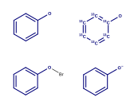 |
The query molecule can be disconnected. Matched fragments in the target structure cannot overlap.
| Substructure Query | Examples of Molecules Retrieved | Examples of Molecules Not Retrieved |
|---|---|---|
 |
 |
 |
Substructure Query Features¶
Explicit Hydrogens¶
The explicit hydrogens specified in the query structure must match any (explicit or implicit) hydrogen in the target structure.
| Substructure Query | Examples of Molecules Retrieved | Examples of Molecules Not Retrieved |
|---|---|---|
 |
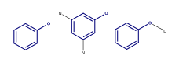 |  |
 |
||
 |
 |
Charges and Radicals¶
The presence of charged atoms in the query molecule is an additional property. If the charge is specified, it must match the charge in the target molecule. An atom without a specific charge can match an atom with either charge. The same rule applies for radicals.
| Substructure Query | Examples of Molecules Retrieved | Examples of Molecules Not Retrieved |
|---|---|---|
 |
 |
|
| 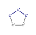 |  |
|
 |
 |
Isotopes¶
The presence of isotopes atoms in the query molecule is an additional property, like charges.
| Substructure Query | Examples of Molecules Retrieved |
|---|---|
 |
 |
 |
 |
Valence¶
Valence can be specified on the query atoms.
| Substructure Query | Examples of Molecules Retrieved | Examples of Molecules Not Retrieved |
|---|---|---|
 |
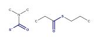 |  |
Preventing Hydrogen Substitutions¶
| Substructure Query | Examples of Molecules Retrieved | Examples of Molecules Not Retrieved |
|---|---|---|
 |
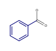 |  |
Number of Non-Hydrogen Substitutions¶
| Substructure Query | Examples of Molecules Retrieved | Examples of Molecules Not Retrieved |
|---|---|---|
 |
 |
 |
Unsaturation flag¶
An unsaturated atom must have at least one non-single bond.
| Substructure Query | Examples of Molecules Retrieved | Examples of Molecules Not Retrieved |
|---|---|---|
 |
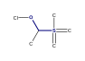 |
Ring Bond Count¶
You can specify the number of ring bonds that are connected to the atom.
| Substructure Query | Examples of Molecules Retrieved | Examples of Molecules Not Retrieved |
|---|---|---|
 |
 |
Bond Topology¶
“Ring” query bonds must match the ring(s) of the target molecule; “chain” query bonds must not.
| Substructure Query | Examples of Molecules Retrieved | Examples of Molecules Not Retrieved |
|---|---|---|
| 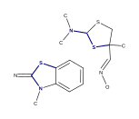 |  |
|
 |
 |
 |
Query Atom Labels¶
“A” query atom matches any atom except hydrogen (or its isotopes). “Q” query atom matches any atom except hydrogen and carbon.
| Substructure Query | Examples of Molecules Retrieved | Examples of Molecules Not Retrieved |
|---|---|---|
 |
 |
 |
 |
 |
Atom Lists¶
You can specify the list of elements that are allowed or prohibited for the query atom. Hydrogen in the list can match the explicit or implicit hydrogen of the target.
| Substructure Query | Examples of Molecules Retrieved |
|---|---|
 |
 |
 |
 |
Query Bonds¶
The following types of query bonds are supported:
- Single or double
- Single or aromatic
- Double or aromatic
- Any
Below is an example with ‘Single or Double’ bonds. Such bonds cannot match aromatic target bonds.
| Substructure Query | Examples of Molecules Retrieved | Examples of Molecules Not Retrieved |
|---|---|---|
 |
Cis-trans Isomerism¶
You can specify the “stereo” flag on a carbon double bond that you do not want to rotate in order to exclude cis-trans isomers from the search results. Explicit and implicit hydrogen substituents are supported.
| Substructure Query | Examples of Molecules Retrieved | Examples of Molecules Not Retrieved |
|---|---|---|
 |
 |
 |
 |
 |
Chirality¶
The following tetrahedral stereocenters are allowed:
- C or Si or N+ with 3 single bonds (implicit hydrogen)
- C or Si or N+ with 4 single bonds
- S with 2 single bonds and 2 double bonds
- P with 3 single bonds and 1 double bond
- P+ with 4 single bonds
Also, a special type of tetrahedral stereocenter—with the pyramid is formed by 3 neighbor atoms and the lone pair of electrons—is allowed:
- N or P or S+ with 3 single bonds
- S with 2 single bonds and 1 double bond
The stereocenter is defined by up- or down-oriented stereobond(s) connected to it. The chirality is determined from the stereobond orientation and the position of atoms. The stereocenter that has an “absolute” configuration can match only “absolute” stereocenters that have the same chirality.
| Substructure Query | Examples of Molecules Retrieved | Examples of Molecules Not Retrieved |
|---|---|---|
 |
 |
Here are two examples of non-carbon chiral centers:
| Substructure Query | Examples of Molecules Retrieved |
|---|---|
 |
 |
 |
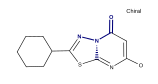 |
MDL notation of stereogroups is supported. “AND” stereocenters can match “AND”, “OR”, and absolute ones; “OR” stereocenters can match “OR” and absolute ones. Target stereo-groups cannot be more fragmented than the query stereo-groups.
| Substructure Query | Examples of Molecules Retrieved | Examples of Molecules Not Retrieved |
|---|---|---|
 |
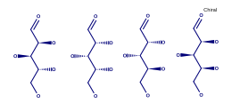 |  |
 |
 |
“Either” stereobond can be specified in the query. The corresponding stereocenter matches any stereocenter regardless of chirality.
| Substructure Query | Examples of Molecules Retrieved | Examples of Molecules Not Retrieved |
|---|---|---|
| 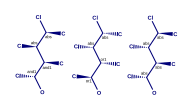 |  |
Note: The embedding of the substructure is not limited to the way in which it is drawn. Sometimes, single bonds can “swap”, producing the hits that are correct, but appear strange.
| Substructure Query | Examples of Molecules Retrieved |
|---|---|
 |
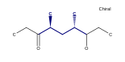 |
Note: A chiral center with explicit hydrogen can match a chiral center with implicit hydrogen, and vice versa.
| Substructure Query | Examples of Molecules Retrieved |
|---|---|
 |
 |
 |
Markush Search¶
Markush search has the same syntax as the basic substructure search, and it will be performed automatically if the query molecule contains one or more R-groups.
| Markush Query | Examples of Molecules Retrieved | Examples of Molecules Not Retrieved |
|---|---|---|
 |
 |
 |
 |
 |
 |
Aromaticity in Substructure Search and Markush Search¶
Basic Queries¶
Aromatic bonds can match only aromatic bonds.
| Substructure Query | Examples of Molecules Retrieved | Examples of Molecules Not Retrieved |
|---|---|---|
 |
 |
|
 |
 |
 |
 |
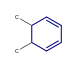 |  |
Queries with Query Features¶
Some queries with query features can have ambiguous aromaticity status: they are aromatic in one matching and not aromatic in another matching.
| Substructure Query | Examples of Molecules Retrieved | Examples of Molecules Not Retrieved |
|---|---|---|
 |
 |
|
| 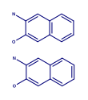 |  |
Aromaticity and Markush Search¶
Markush queries are allowed to match both aromatic and non-aromatic targets.
| Substructure Query | Examples of Molecules Retrieved |
|---|---|
 |
 |
Charge and Aromaticity¶
Charges and aromatic bonds are matched independently. In some structures where the acquisition of the charge by an atom destroys the aromaticity of a ring, matching is not possible due to the mismatch of bond orders.
| Substructure Query | Examples of Molecules Not Retrieved |
|---|---|
 |
However, uncharged aromatic queries match charged aromatic structures:
| Substructure Query | Examples of Molecules Retrieved |
|---|---|
 |
 |
Pseudo-atoms¶
Pseudo-atom in the query structure can match only the same pseudo-atom in the target structure. The matching is case-sensitive.
| Substructure Query | Examples of Molecules Retrieved | Examples of Molecules Not Retrieved |
|---|---|---|
 |
 |
 |
Pseudo-atoms in target structures are never expanded:
| Substructure Query | Examples of Molecules Not Retrieved |
|---|---|
 |
 |
Query atoms can match pseudo-atoms:
| Substructure Query | Examples of Molecules Retrieved |
|---|---|
 |
 |
Note: ‘X’ atom is treated as ‘any halogen’ query atom by default, but there is an option to treat it as pseudo-atom. In order to treat it so, please run the following SQL statement prior to table indexing:
exec Bingo.TreatXAsPseudoatom(1);
After that, please reconnect to the database. This setting will be saved, so you will never need to run the statement again (unless you re-install the cartridge). To get the original behavior back, you can run the following SQL statement:
exec Bingo.TreatXAsPseudoatom(0);
| Substructure Query | Examples of Molecules Retrieved (Or Not) | Comment |
|---|---|---|
 |
|
|
 |
 |
|
Resonance Search¶
The resonance substructure search is provided by the Sub operator
with RES parameter:
SELECT * FROM $table WHERE Bingo.Sub($column, $query, 'RES')=1;
With this type of search you can find molecules whose resonance forms contain the query molecule.
| Substructure Query | Example of Molecule Retrieved | Matched Resonance Form |
|---|---|---|
 |
 |
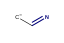 |
 |
 |
 |
The query molecule can contain any query features:
| Substructure Query | Example of Molecule Retrieved | Matched Resonance Form |
|---|---|---|
 |
 |
|
 |
 |
Impossible resonance forms are not matched:
| Substructure Query | Example of Molecule Not Retrieved |
|---|---|
 |
Actually, only the main resonance contributors are matched. The main resonance contributors are resonance forms that have the maximum number of atoms with the full octet and/or the minimum number of atoms with nonzero formal charge. For example, the following structure would not match itself because both atoms are charged and only one atom has a full octet:
| Substructure Query | Example of Molecule Not Retrieved |
|---|---|
 |
 |
Uncharged atoms still match charged ones in the resonance search:
| Substructure Query | Example of Molecule Retrieved | Matched Resonance Form |
|---|---|---|
 |
 |
 |
A resonance chain can be of any length:
| Substructure Query | Example of Molecule Retrieved |
|---|---|
 |
 |
Cyclic resonance forms are currently not supported:
| Substructure Query | Example of Molecule Not Retrieved |
|---|---|
3D Constraints¶
Bingo supports all types of 3D constraints for the queries in MDL (Symyx) Molfile 2000 format:
- Distance ranges
- Angle ranges
- Dihedral angle ranges
- Exclusion spheres
The substructure match with 3D constraints follows the rules of the ordinary substructure match. In addition, the 3D constraints defined in the query molecule must be fulfilled by the corresponding atoms of the target. If the query can be embedded in several ways, all embeddings are checked. The query matches the target when at least one embedding conforms to the conditions.
Note: 3D constraints of Molfile 3000 format are not supported.
Affine Transformation Search¶
This type of 3D search treats the molecule as a rigid structure consisting of points in space. Similar to the case of the search with constraints, all inclusions of the query are checked against the following condition: the structure of the query is transformed to its image on the target by an affine transformation (translation+rotation+scale). 1 The syntax of the affine transformation substructure search is as follows:
SELECT * FROM $table WHERE Bingo.Sub($column, $query, 'AFF $rms')=1;
rms is the maximum allowed root-mean-square deviation of all imposed
atoms. It is measured in angstroms.
The query atoms that are fixed must be labeled fixed. The imposition of
other atoms is not restricted to rms.
The following example makes no chemical sense, but is included here as a simple two-dimensional illustration of the affine transformation search:
| Substructure Query | Parameters | Examples of Molecules Retrieved | Examples of Molecules Not Retrieved |
|---|---|---|---|
AFF 0.1 |
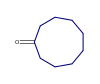 |  |
Note: When no atoms are labeled fixed, all of them are considered fixed.
Conformational Search¶
Any conformation can be obtained by rotating the molecule around single
bonds. Thus, the inclusion is correct if the image of the query molecule
is the conformation of the query, i.e. a sequence of rotations of the
molecule around single bonds converts the query into a substructure of
the target. In a way similar to affine transformation search, you can
set the rms parameter in order to define the accuracy of the
transformation.
The syntax of the conformational substructure search is as follows:
SELECT * FROM $table WHERE Bingo.Sub($column, $query, 'CONF $rms')=1;
| Substructure Query | Parameters | Examples of Molecules Retrieved | Examples of Molecules Not Retrieved |
|---|---|---|---|
 |
CONF 0.1 |
 |
 |
SMARTS Search¶
You can search over your database for SMARTS expression match with the following query:
SELECT * FROM $table WHERE Bingo.SMARTS($column, $smarts)=1;
Differences between substructure and SMARTS matching¶
While a lot of SMARTS notation is allowed in Sub() operator queries
as well, there are differences between substructure and SMARTS search:
- SMARTS fragments $(...) are not allowed in ordinary substructure search
- Empty bond designator (like ‘CC’ or ‘cc’) denotes ‘single or
aromatic’ bond in
SMARTS(). InSub(), it denotes aromatic bond, if it belongs to a ring and has both end atoms aromatic (lowercase); otherwise, it denotes a single bond. - ‘C’ within
SMARTS()means aliphatic carbon, while ‘C’ withinSub()means any carbon. The same applies to ‘B’, ‘N’, ‘O’, ‘S’, ‘P’. ‘C1~C~C~C~C~C~1’ won’t match ‘c1ccccc1’ inSMARTS(), but it will do so inSub(). - SMARTS queries are not fed to aromaticity matcher. ‘c1-c=c-c=c-c=1’
won’t match ‘c1ccccc1’ in
SMARTS(), but it will do so inSub(). - Tautomer (
TAU) and resonance (RES) matching options are not allowed withinSMARTS()operator.
Exact Search¶
The general form of exact search query is as follows:
SELECT * FROM $table WHERE Bingo.Exact($column, $query, $parameters)=1;
You can omit the $parameters value:
SELECT * FROM $table WHERE Bingo.Exact($column, $query)=1;
It is equal to:
SELECT * FROM $table WHERE Bingo.Exact($column, $query, 'ALL')=1;
This kind of search makes it possible for you to set various search conditions. If no search conditions are set, two molecules are considered similar when they are completely equal (up to aromaticity and implicit/explicit hydrogens). You can set up the flags to match only some characteristics of the molecule:
The supported flags are:
| Flag | Comment |
|---|---|
| ELE | Distribution of electrons: bond types, atom charges, radicals, valences |
| MAS | Atom isotopes |
| STE | Stereochemistry: chiral centers, stereogroups, and cis-trans bonds |
| FRA | Connected fragments: disallows match of separate ions in salts |
| ALL | All of the above (the most restrictive kind of search) |
| NONE | None of the above (the most flexible kind of search) |
$rms |
Affine transformation, see the substructure search description for details |
The flags, which can be combined in any way, should go in the parameters
string separated by space. The rms number, if present, should go
after the flags; for example: ALL 0.1. You can write the minus sign
before the flag to exclude it from the ‘ALL’ flag. For example, ‘ALL
-MAS’ means that all the described features except the isotopes must
match. The NONE flag, if present, must be single.
| Exact Search Query | Example of Molecule Retrieved (or Not) | Comment |
|---|---|---|
 |
 |
Matches with ‘ALL -MAS’, does not match with ‘ALL’ or ‘MAS’ |
 |
Matches with ‘ALL -ELE’, does not match with ‘ALL’ or ‘ELE’ | |
| C | Matches with ‘ALL’ | |
 |
 |
Matches with ‘ALL -FRA’, does not match with ‘ALL’ or ‘FRA’ |
 |
 |
Matches with ‘ALL -STE’, does not match with ‘ALL’ or ‘STE’ |
 |
Matches with ‘ALL’, does not match with ‘0.1’ or ‘ALL 0.1’ |
On aromatic molecules, the BON flag is not sensitive to the
difference between single and double bonds that form the aromatic rings.
| Exact Search Query | Example of Molecule Retrieved | Comment |
|---|---|---|
 |
 |
Matches with ‘ALL’ |
Note: Query features are not allowed in exact search.
Tautomer Search¶
Syntax¶
The general form of exact tautomer search query is the following:
SELECT * FROM $table WHERE Bingo.Exact($column, $query, $parameters)=1;
The general form of tautomer substructure search query is the following:
SELECT * FROM $table WHERE Bingo.Sub($column, $query, $parameters)=1;
for tautomer-as-substructure search
$tableis the name of the table containing molfile CLOBs in the column$column.$queryis a VARCHAR2 or CLOB containing the query molfile or SMILES string.$parametersis a VARCHAR2 containing parameters that restrict the resulting set of molecules by various criteria.
The $parameters string must begin with the TAU word. If it is
the only word, the search with the less restriction will be performed:
SELECT * FROM $table WHERE Bingo.Exact($column, $query, 'TAU')=1;
Some metal bonds and atom charges can replace hydrogen in tautomeric
chains. You can add the HYD word to disable such hydrogen
replacements:
SELECT * FROM $table WHERE Bingo.Exact($column, $query, 'TAU HYD')=1;
Ring-chain tautomerism is disabled by default. You can add R-C
string parameter to enable it.
SELECT * FROM $table WHERE Bingo.Exact($column, $query, 'TAU R-C')=1;
Note: The support of the ring-chain tautomerism is experimental and may not work properly.
Also you can restrict the tautomer search by enabling conditions for boundary atoms in tautomeric chains. By default, there are three conditions:
- Each boundary atom in the tautomeric chain must be one of
N,O,P,S,As,Se,Sb,Te - Carbon not from the aromatic ring at one end of the tautomeric chain,
and one of
N,O,P,Sat the other end - Carbon from the aromatic ring at one end of the tautomeric chain and
one of
N,Oat the other end
To enable the first condition put R1 to $parameters string
(R2 to enable the second condition, R3 to enable the third
condition):
SELECT * FROM $table WHERE Bingo.Exact($column, $query, 'TAU R1 R3')=1;
If you want all conditions enabled, just put R*:
SELECT * FROM $table WHERE Bingo.Exact($column, $query, 'TAU R*')=1;
Each tautomeric chain is checked to conform to one of the given rules.
The more rules you specify, the more flexibility you receive in the
search; but when you specify no rules at all (TAU), you get the
most flexible search because no rules are checked. Any tautomeric chain
is acceptable in this case.
Exact Tautomer Search¶
The resulting set of this kind of search can contain exact matches.
| Tautomer Query | Examples of Molecules Retrieved (or Not) | Comment |
|---|---|---|
 |
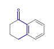 | Matches with TAU or TAU R2, does not match with TAU R1 R3 |
 |
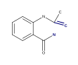 | Matches with TAU R-C or TAU R-C R2, does not match with TAU or TAU R1 R3 |
 |
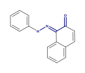 | Matches with TAU or TAU R1, does not match with TAU R2 R3 |
 |
 |
Matches with TAU or TAU R1, does not match with TAU R2 R3 |
 |
Matches with TAU, does not match with TAU R* |
Note: The retrieved molecules in the first row are completely the same because of their aromaticity.
Tautomer Substructure Search¶
The resulting set of this kind of search can contain exact tautomer matches. Additional tautomer parameters have the same effect as in the exact tautomer search.
| Tautomer Query | Examples of Molecules Retrieved (or Not) | Comment |
|---|---|---|
 |
 |
Matches with TAU or TAU R1, does not match with TAU R2 R3 |
 |
 |
Matches with TAU or TAU R2, does not match with TAU R1 R3 |
 |
 |
Matches with TAU, does not match with TAU R* |
Customizing the Rules¶
Bingo user has a table called TAUTOMER_RULES. The three rules
defined above are contained in this table:
SELECT * FROM Bingo.TAUTOMER_RULES;
ID BEG END
----- ------------------- -------------------
1 N,O,P,S,As,Se,Sb,Te N,O,P,S,As,Se,Sb,Te
2 0C N,O,P,S
3 1C N,O
You can add, remove or update the defined rules. VARCHAR2 strings
BEG and END refer to the ends of the tautomeric chain. Allowed
elements are separated by commas. ‘1’ at the beginning means an aromatic
atom, and ‘0’ means an aliphatic (non-aromatic) atom.
INSERT INTO Bingo.TAUTOMER_RULES values($id, $beg, $end);
Note: The ID numbers must be different and belong to the range from 1 to 32.
Tautomer Substructure Search Based on InChI or reaction SMARTS¶
This type of tautomer search is based on the tautomer enumeration procedure using one of supported methods (InChI or RSMARTS).
The query syntax is the following (for InChI):
SELECT * FROM $table WHERE Bingo.Sub($column, $query, 'TAU INCHI')=1;
And for reaction SMARTS:
SELECT * FROM $table WHERE Bingo.Sub($column, $query, 'TAU RSMARTS')=1;
The output depends on the set of tautomers found by the selected enumeration procedure. For example for the following molecule/query the output differs:
{kind=link}
Below is the set of possible tautomers for INCHI option and query mappings:
{kind=link}
{kind=link}
The result for RSMARTS option (same molecule and query):
{kind=link}
{kind=link}
Similarity Search¶
Description and Syntax¶
This type of search estimates the similarity of the molecules by comparing their bit imprints (fingerprints). Characteristics based on the following metrics are supported:
- Tanimoto metric: c / (a + b - c)
- Tversky metric: c / (alpha * (a-c) + beta * (b-c) + c)
- Euclidean metric for substructures: c / a
where
- a is the count of bits in the fingerprint of the query
- b is the count of bits in the fingerprint of the target
- c is the count of coincident bits in the fingerprints
All characteristics have values from 0 to 1, with the value of 1 providing the maximum similarity (which means equal fingerprints).
You can specify in the query the minimum similarity and/or the maximum similarity that the fetched molecules must have.
SELECT * FROM $table WHERE Bingo.Sim($column, $query, $metric) > $min;
SELECT * FROM $table WHERE Bingo.Sim($column, $query, $metric) < $max;
SELECT * FROM $table WHERE Bingo.Sim($column, $query, $metric) BETWEEN $min AND $max;
$minis the lower limit of the desired similarity.$maxis the upper limit.$metricis a string specifying the metric to use:tanimoto,tversky, oreuclid-sub. In case of Tversky metric, there are optional “alpha” and “beta” parameters:tversky 0.9 0.1denotes alpha = 0.9, beta = 0.1. The default is alpha = beta = 0.5 (Dice index).
You can omit the $metric parameter and write
Bingo.Sim($column, $query). The default Tanimoto metric will be
used.
Note: Query features are not allowed in query molecules for similarity search.
Examples¶
| Query Molecule | Metrics | Lower Limit | Examples of Molecules Retrieved |
|---|---|---|---|
 |
Tanimoto | 0.7 |  |
 |
Euclid for Substructures | 0.95 |
Gross Formula Search¶
Description and Syntax¶
You can get the gross formula of the molecule with the Bingo.Gross()
operator:
SELECT Bingo.Gross($molfile) FROM DUAL;
SELECT Bingo.Gross('C1C=CC=CC=1') FROM DUAL;
SELECT Bingo.Gross($column) FROM $table;
You can also query a table for molecules with gross formula more than, less than, or equal to query gross formula.
SELECT * FROM $table WHERE Bingo.Gross($column, '>= $query')=1;
SELECT * FROM $table WHERE Bingo.Gross($column, '<= $query')=1;
SELECT * FROM $table WHERE Bingo.Gross($column, '= $query')=1;
The order of atoms and the spaces in the query does not matter.
| Left Side | Relation | Right Side |
|---|---|---|
| OC6 | = | C6 O |
| OC6 | ? | C6 O |
| C6 O | ? | C8 O2 |
| C6 Cl | ? | C6 |
| C6 H5 | ? | C6 H6 |
Note: Gross formula are not always comparable: for example, ‘C2 H6 O’ and ‘Ag O N C’
Examples¶
| Query | Examples of Molecules Retrieved |
|---|---|
= C6 H6 |
 |
<= C4 H4 O |
 |
>= Cl6 |
 |
Molecular Mass Search¶
Description and syntax¶
The Bingo.Mass operator returns molecular mass as the sum of the
standard atomic weights for atoms without isotope specified and relative
atomic masses of isotopes. The table with masses was extracted from the
http://physics.nist.gov/PhysRefData/Compositions website.
SELECT Bingo.Mass($molecule) FROM DUAL;
SELECT Bingo.Mass($column) FROM $table;
You can also query a table for the molecules with molecular mass more than a value, less than a value, or between two values.
SELECT * FROM $table WHERE Bingo.Mass($column) > $lower;
SELECT * FROM $table WHERE Bingo.Mass($column) < $upper;
SELECT * FROM $table WHERE Bingo.Mass($column) BETWEEN $lower AND $upper;
Examples¶
| Query | Examples of Molecules Retrieved | Mass |
|---|---|---|
Bingo.Mass(molecule) > 100 |
 |
130.185 |
Bingo.Mass(molecule) < 100 |
 |
94.115 |
Customization¶
Bingo provides the possibility for changing default atom masses with the following procedure:
EXECUTE BEGIN Bingo.SetRelativeAtomicMass($str); END;
$str is the VARCHAR2 string. Its value must be contain the default
atom masses separated by semicolons, for example:
”C 12; N 14; O 16”.
Other Kinds of Molecular Weight¶
The Bingo.Mass has an optional VARCHAR2 parameter, which defines
the ‘kind’ of the resulting molecular mass value:
Bingo.Mass($molecule, 'molecular-weight')returns the molecular weight (this is the default).Bingo.Mass($molecule, 'most-abundant-mass')returns the most abundant mass, which is calculated using most likely isotopic composition for a single random molecule.Bingo.Mass($molecule, 'monoisotopic-mass')returns the monoisotopic mass, which is calculated using the most abundant isotope of each element.
Canonical SMILES¶
The Bingo.CANSMILES() operator can be used for generating canonical
SMILES of Molfiles, other SMILES, or binary molecules. The operator
works equally well with CLOB, BLOB, and VARCHAR2 operands. The operator
always returns the VARCHAR2 result.
SELECT Bingo.CanSMILES($molfile) FROM DUAL;
SELECT Bingo.CanSMILES($column) FROM $table;
Bingo Canonical SMILES is, according to Daylight and ChemAxon terminology, unique SMILES with isomeric information, or absolute SMILES. All significant molecular features, such as isotopes, charges, radicals, stereocenters, stereogroups, cis-trans bonds, and aromaticity, are encoded into SMILES in a canonical form. A canonical SMILES string defines the molecule independently of any particular representation (atoms renumbering, stereogroups renumbering, explicit/implicit hydrogens). So, the equality of canonical SMILES of two molecules guarantees that these molecules are the same, and vice versa:
Bingo.CANSMILES($a) = Bingo.CANSMILES($b)
if and only if
Bingo.Exact($a, $b, 'ALL') = 1
Note: A canonical SMILES computation can only be done for database molecules. Query features are not supported.
Note: If the input molecule is badly formed (i.e. does not conform to any format, has drawing mistakes or has unsupported features), Bingo throws an exception to Oracle.
Molecule Fingerprints¶
The Bingo.Fingerprint operator can be used to generate Indigo
fingerprints for molecule structures. The operator has two arguments:
molecule and options, and returns BLOB result.
SELECT Bingo.Fingerprint($molecule, $type) FROM DUAL;
SELECT Bingo.Fingerprint($binary, $type) FROM DUAL;
SELECT Bingo.Fingerprint($column, $type) FROM $table;
The options are the same as for IndigoObject.fingerprint method from
the Indigo SDK described
here.
The following fingerprint types are available:
sim— “Similarity fingerprint”, useful for calculating similarity measures (the default)sub— “Substructure fingerprint”, useful for substructure screeningsub-res— “Resonance substructure fingerprint”, useful for resonance substructure screeningsub-tau— “Tautomer substructure fingerprint”, useful for tautomer substructure screeningfull— “Full fingerprint”, which has all the mentioned fingerprint types included
InChI and InChIKey¶
The Bingo.InChI operator can be used to generate
InChI string for a given
molecule structure. The operator has two arguments: molecule and
options, and returns CLOB result.
SELECT Bingo.InChI($molecule, $options) FROM DUAL;
SELECT Bingo.InChI($binary, $options) FROM DUAL;
SELECT Bingo.InChI($column, $options) FROM $table;
You can pass any options supported by the official InChI library. This options can be found in the InChI manual or on the InChI FAQ page. Usage example:
SELECT Bingo.InChI('CC1CC(C)OC(C)N1', '') FROM DUAL;
SELECT Bingo.InChI('CC1CC(C)OC(C)N1', '/DoNotAddH /SUU /SLUUD') FROM DUAL;
SELECT Bingo.InChI('CC1CC(C)OC(C)N1', '-DoNotAddH -SUU -SLUUD') FROM DUAL;
Each option can start with \ or - symbol.
The Bingo.InChIKey operator can be used to generate
InChIKey
from InChI string:
SELECT Bingo.InChIKey('InChI=1S/C6H6O/c7-6-4-2-1-3-5-6/h1-5,7H') FROM DUAL;
SELECT Bingo.InChIKey(Bingo.InChI('OC1=CC=CC=C1', '')) FROM DUAL;
Reactions¶
Conversion to Reaction SMILES¶
The Bingo.RSMILES() operator can be used for converting Rxnfiles and
binary reactions to reaction SMILES. The operator works equally well
with CLOB, BLOB, and VARCHAR2 operands. The operator always returns the
VARCHAR2 result.
SELECT Bingo.RSMILES($rxnfile) FROM DUAL;
SELECT Bingo.RSMILES($binary) FROM DUAL;
SELECT Bingo.RSMILES($column) FROM $table;
Note: If the input reaction is badly formed (i.e. does not accord to any format, has drawing mistakes or has unsupported features), Bingo throws the exception to Oracle.
Converting a Table¶
When you convert a table to reaction SMILES, you have two possibilities for skipping the bad exception- raising reactions:
1. Short option:
CREATE TABLE $newtable AS SELECT $id $newid, Bingo.RSMILES($rxnfile) $rsmiles FROM $table
WHERE Bingo.CheckReaction($rxnfile) IS NULL;
2. Lengthy but faster option:
CREATE TABLE $newtable ($newid NUMBER, $rsmiles VARCHAR2(4000));
set serveroutput on;
declare
i int := 0;
begin
dbms_output.enable(1000000);
for item in (select $id, $rxnfile from $table) loop
begin
INSERT INTO $newtable values(item.$id, bingo.RSMILES(item.$rxnfile, 1));
exception
when others then
dbms_output.put_line('Bad reaction '|| item.$id ||': ' || SQLERRM);;
end;
i := i + 1;
if i mod 1000 = 0 then
COMMIT;
end if;
end loop;
end;
$table contains Rxnfiles in the $rxnfile column and the reaction
ID-s in the $id column. $newtable will contain reaction SMILES
in the $rsmiles column and reaction ID-s in the $newid column.
Conversion to binary format¶
The Bingo.CompactReaction() operator can be used for converting
Rxnfiles and reaction SMILES to internal binary format. The operator
works equally well with CLOB, BLOB, and VARCHAR2 operands. The operator
always returns the BLOB result.
SELECT Bingo.CompactReaction($rxnfile, $xyz) FROM DUAL;
SELECT Bingo.CompactReaction($rsmiles, $xyz) FROM DUAL;
SELECT Bingo.CompactReaction($column, $xyz) FROM $table;
The $xyz parameter must be 0 or 1. If it is 1, the positions of
atoms are saved to the binary format. If it is zero, the positions are
skipped.
Note: If the input reaction is badly formed (i.e. does not conform to any format, has drawing mistakes or has unsupported features), Bingo throws the exception to Oracle.
Converting a table¶
When you convert a table to binary format, you have two possibilities for skipping the bad exception-raising reactions:
1. Short option:
CREATE TABLE $newtable AS SELECT $id $newid, Bingo.CompactReaction($rxnfile, &xyz) $binary FROM $table
WHERE Bingo.CheckReaction($rxnfile) IS NULL;
2. Lengthy but faster option:
CREATE TABLE $newtable ($newid NUMBER, $binary BLOB) lob($binary) store as (enable storage in row);
set serveroutput on;
declare
i int := 0;
begin
dbms_output.enable(1000000);
for item in (select $id, $rxnfile from $table) loop
begin
INSERT INTO $newtable values(item.$id, bingo.CompactReaction(item.$rxnfile, $xyz));
exception
when others then
dbms_output.put_line('Bad reaction '|| item.$id ||': ' || SQLERRM);
end;
i := i + 1;
if i mod 1000 = 0 then
COMMIT;
end if;
end loop;
end;
Creating an Index¶
The following command creates the index:
CREATE INDEX $index ON $table ($column) INDEXTYPE IS Bingo.ReactionIndex;
$table is the name of the table containing reaction data in the
column $column. $index is the unique name of the Oracle domain
index that will be created.
Exact Search¶
The general form of reaction exact search query is as follows:
SELECT * FROM $table WHERE Bingo.RExact($column, $query, $parameters)=1;
You can omit the $parameters value:
SELECT * FROM $table WHERE Bingo.RExact($column, $query)=1;
It is equal to:
SELECT * FROM $table WHERE Bingo.RExact($column, $query, 'ALL')=1;
This kind of search makes it possible for you to set various search conditions. If no search conditions are set, two molecules are considered similar when they are completely equal (up to aromaticity and implicit/explicit hydrogens). You can set up the flags to match only some characteristics of the molecule:
The supported flags are:
| Flag | Comment |
|---|---|
| ELE | Distribution of electrons: bond types, atom charges, radicals, valences |
| MAS | Atom isotopes |
| STE | Stereochemistry: chiral centers, stereogroups, and cis-trans bonds |
| AAM | Atom-to-atom mapping |
| RCT | Reacting centers |
| ALL | All of the above (the most restrictive kind of search) |
| NONE | None of the above (the most flexible kind of search) |
The flags, which can be combined in any way, should go in the parameters
string separated by space. You can write the minus sign before the flag
to exclude it from the ‘ALL’ flag. For example, ‘ALL -MAS -AAM’ means
that all the described features except the isotopes and the AAM numbers
must match. The NONE flag, if present, must be single.
SMARTS Search¶
You can search over your database for reaction SMARTS expression match with the following query:
SELECT * FROM $table WHERE Bingo.RSMARTS($column, $rsmarts)=1;
Substructure Search¶
Description and Syntax¶
The general form of the substructure search query is the following:
SELECT * FROM $table WHERE Bingo.RSub($column, $query)=1;
$tableis the name of the table containing the reaction$column. The target reactions may be represented in Rxnfile, reaction SMILES or binary format.$columnmay have CLOB, VARCHAR2, and BLOB data type.$queryis a VARCHAR2 or CLOB containing the query Rxnfile or reaction SMILES.
Examples¶
You can specify an arbitrary amount of reactants and products in the query. The different reactants/products of the query match the different reactants/products of the matched target.
Reaction Substructure Query

Example of Reaction Retrieved

You can specify an empty reactant or empty target:
Reaction Substructure Query
Example of Reaction Retrieved

Query atom-to-atom mapping, when present, is taken into account:
Reaction Substructure Query

Example of Reaction Retrieved

Example of Reaction Not Retrieved
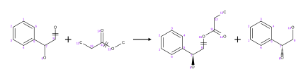
Reacting centers in the query, if present, match the target reacting centers as well:
Reaction Substructure Query

Example of Reaction Retrieved

Example of Reaction Not Retrieved

Stereo inversion/retention flags are supported in the query:
Reaction Substructure Query

Example of Reaction Retrieved
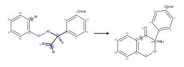
Example of Reaction Not Retrieved
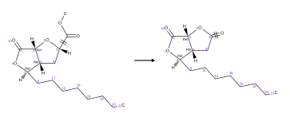
You can specify any query features, as in the molecule substructure search, except the R-Groups:
Reaction Substructure Query

Example of Reaction Retrieved

Automatic Atom-to-Atom Mapping¶
Description and Syntax¶
The following Bingo operator is used to compute reaction AAM:
Bingo.AAM($reaction, $strategy)
You can get the resulting reaction by selecting it from the DUAL
table:
SELECT Bingo.AAM($reaction, $strategy) FROM DUAL;
As $reaction you can specify VARCHAR2, CLOB, or BLOB containing
reaction SMILES, Rxnfile of binary reaction.
$strategy is one of the following VARCHAR2 strings:
DISCARD: discards the existing mappings entirely and considers only the existing reaction centers.KEEP: keeps the existing mapping and maps unmapped atoms.ALTER: alters the existing mapping, and maps the rest of the reaction but may change the existing mapping.CLEAR: removes the mappings from the reaction.
Note: In the ‘KEEP’ and ‘ALTER’ modes, any possible contradictions between the existing mapping and the reaction centers are resolved by correcting the reacting centers.
As a result, the operator always returns CLOB with Rxnfile.
Note: In case the given reaction does not have atom positions (i.e. is represented as a reaction SMILES or binary format without atom positions), the automatic reaction layout is performed.
Examples¶
Building the mapping from reacting centers (DISCARD mode):
Source Reaction

Resulting Reaction

Keeping the existing mapping (KEEP mode). Note also the change in
the 3-7 reacting center:
Source Reaction

Resulting Reaction

Altering the existing mapping (ALTER mode). Note the correction of
bond 16-18, the renumbering of mapped atoms and numbering of the
unmapped atoms:
Source Reaction

Resulting Reaction

Clearing the mapping (CLEAR mode):
Source Reaction
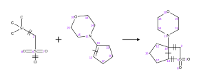
Resulting Reaction

Reaction Fingerprints¶
The Bingo.RFingeprint operator can be used to generate Indigo
fingerprints for reaction structures. The operator has two arguments:
reaction and options and returns BLOB result.
SELECT Bingo.Fingerprint($reaction, $type) FROM DUAL;
SELECT Bingo.Fingerprint($binary, $type) FROM DUAL;
SELECT Bingo.Fingerprint($column, $type) FROM $table;
The options are the same as for IndigoObject.fingerprint method from
the Indigo SDK described
here.
The following fingerprint types are available:
sim— “Similarity fingerprint”, useful for calculating similarity measures (the default)sub— “Substructure fingerprint”, useful for substructure screeningfull— “Full fingerprint”, which has all the mentioned fingerprint types included
Nonstandard Queries¶
Finding Non-Matches¶
You can specify zero right side in the Bingo operator calls in order to find targets that do not match the query.
SELECT * FROM $table WHERE Bingo.Sub($column, $query, $parameters)=0;
SELECT * FROM $table WHERE Bingo.Exact($column, $query, $parameters)=0;
SELECT * FROM $table WHERE Bingo.Gross($column, $query, $parameters)=0;
SELECT * FROM $table WHERE Bingo.RSub($column, $query)=0;
Fragment Highlighting¶
Along with the results of the substructure search, you can get back the target molecules or reactions in Molfile/Rxnfile v3000 format with the query fragment highlighted.
SELECT $id, Bingo.SubHi(1) FROM $table WHERE Bingo.Sub($column, $query, 1)=1;
You can also do an affine transformation or a conformation search in this manner.
SELECT $id, Bingo.SubHi(1) FROM $table WHERE Bingo.Sub($column, $query, 'AFF $rms', 1)=1;
SELECT $id, Bingo.SubHi(1) FROM $table WHERE Bingo.Sub($column, $query, 'CONF $rms', 1)=1;
SMARTS search results also can be viewed with highlighting:
SELECT $id, Bingo.SmartsHi(1) FROM $table WHERE Bingo.SMARTS($column, $query, 1)=1;
When performing tautomer search, you can highlight the tautomeric chains that differ in query and target.
SELECT $id, Bingo.ExactHi(1) FROM $table WHERE Bingo.Exact($column, $query, 'TAU $parameters', 1)=1;
In tautomer substructure search, both the fragment and chains are highlighted.
SELECT $id, Bingo.SubHi(1) FROM $table WHERE Bingo.Sub($column, $query, 'TAU $parameters', 1)=1;
For reaction substructure search, you can highlight the query reaction in the target reaction.
SELECT $id, Bingo.RSubHi(1) FROM $table WHERE Bingo.RSub($column, $query, 1)=1;
Examples of highlighting are all over the User Manual. The highlighted fragments in the examples are rendered in bold font and double bond width.
Note: In case the matched molecule or reaction does not have layout information (i.e. is represented as SMILES or binary format with atom positions switched off), the automatic layout procedure is performed.
You can also convert the highlighted Molfiles/Rxnfiles to SMILES, which will contain the highlighting information encoded to a format understandable by Indigo toolkit, and particularly by the indigo-depict utility:
SELECT $id, Bingo.SMILES(Bingo.SubHi(1)) FROM $table WHERE Bingo.Sub($column, $query, 1)=1;
SELECT $id, Bingo.SMILES(Bingo.SmartsHi(1)) FROM $table WHERE Bingo.SMARTS($column, $query, 1)=1;
Multiple Conditions and Joins¶
You can mix the cartridge operators with other (standard) operators to restrict the set of fetched results:
SELECT * FROM $table WHERE Bingo.Sub($column, $query)=1 AND $molweight < $value;
Mixing various Bingo operators is also possible:
SELECT * FROM $table WHERE Bingo.Sub($column, $query)=1 AND Bingo.Gross($column, '>= C20')=1;
You can select from two or more tables:
SELECT * FROM $table1, $table2 WHERE
Bingo.Sub($column1, $query1)=1 AND Bingo.Sub($column2, $query2)=1 AND
Bingo.Gross($column1)=Bingo.Gross($column2);
Note: In case $query is a VARCHAR2 string, Bingo is able to make
use of Oracle’s Cost-Based Optimizer (CBO) capability. This capability
allows Oracle to call single operator functions rather than to use the
index implementation, if the former gives higher performance
expectations.
Note: A CLOB $query does not take advantage of CBO due to the
technical limitation of Oracle.
Importing and Exporting Data¶
Importing SDFiles, RDFiles, and SMILES files¶
You can import a molecule or reaction table from an SDF file. You can
also import SDF fields corresponding to each record in the SDF file.
Prior to importing, you have to create the table manually and grant to
Bingo the access to insert to your table:
CREATE TABLE $table(..., $column CLOB, ...);
GRANT INSERT ON $table to Bingo;
EXEC Bingo.ImportSDF('$table', '$column', '$other_columns', '$filename');
$tableis the name of the table subject to import, including the schema qualifier.$columnis the name of the CLOB column containing the data in Molfile or Rxnfile format.$other_columnsis the comma-separated list of space-separated ‘property-column’ pairs that are to be imported. Each given SDF property is mapped to the given table column. You can specify an empty string or NULL if there are no properties to import.$filenameis the location of the resulting file on the server filesystem.
One can import a part of PubChem database (stored, for example, in
pubchem.sdf file) with the following commands:
CREATE TABLE STRUCTURES(cid INT, structure CLOB, name VARCHAR2(4000), mw NUMBER);
GRANT INSERT ON STRUCTURES to Bingo;
EXEC Bingo.ImportSDF('PUBCHEM.STRUCTURES', 'structure',
'pubchem_compound_cid cid, pubchem_iupac_name name, pubchem_molecular_weight mw',
'/tmp/pubchem.sdf');
GZip-compressed data is detected automatically in ImportSDF, and so
you can call it the same way:
EXEC Bingo.ImportSDF('PUBCHEM.STRUCTURES', 'structure',
'pubchem_compound_cid cid, pubchem_iupac_name name, pubchem_molecular_weight mw',
'/tmp/pubchem.sdf.gz');
Importing RDF files is done with ImportRDF() function the same way
as SDF files:
CREATE TABLE $table(..., $column CLOB, ...);
GRANT INSERT ON $table to Bingo;
EXEC Bingo.ImportRDF('$table', '$column', '$other_columns', '$filename');
Importing multi-line molecule or reaction SMILES file is done the
similar way with the ImportSMILES() function:
CREATE TABLE $table($id INT, $column VARCHAR2(4000));
GRANT INSERT ON $table to Bingo;
EXEC Bingo.ImportSMILES('$table', '$column', '$id', '$filename');
$table,$column, and$filenamehave the usual meaning$idis the column where molecule and reaction identifiers go. The identifier within SMILES string is anything that goes after the molecule or reaction, separated by space. It is allowed to pass an empty string or NULL as the$idparameter, if there are no identifiers in the SMILES file subject to import.
Note: When you import the file contents to a table, the old table contents are not removed. Thus, you can import multiple files into the same table.
Note: You cannot use these procedures without granting to Bingo
the access to select from/insert to your table.
Exporting SDFiles¶
Exporting SDF files is conducted in a similar way to importing, except
that you have to grant to Bingo the access to select from your table
rather than insert to it: You can export the molecule or reaction table
to an SDF file.
EXEC Bingo.ExportSDF($table, $column, $other_columns, $filename);
Example of exporting the PubChem database to the /tmp/pubchem.sdf
file:
EXEC Bingo.ExportSDF('PUBCHEM.COMPOUNDS', 'structure', 'cid name mw', '/tmp/pubchem.sdf');
You can also export the table to a GZip-compressed SDF file:
EXEC Bingo.ExportSDFZip($table, $column, $other_columns, $filename);
In this case, please do not forget to append .gz to the file name:
EXEC Bingo.ExportSDFZip('PUBCHEM.COMPOUNDS', 'structure', 'cid name mw', '/tmp/pubchem.sdf.gz');
Utility Functions¶
Extracting the Names of Molecules and Reactions¶
Bingo.Name function extracts the molecule or reaction name from
Molfile, Rxnfile, or SMILES string.
SELECT bingo.Name(molfile) from mytable;
SELECT bingo.Name('c1ccc2ccccc2c1 Naphthalene') from DUAL;
Conversion to Molfiles/Rxnfiles and CML¶
Use the Bingo.Molfile operator to convert SMILES or binary molecule
back to Molfile:
SELECT Bingo.Molfile($smiles) from DUAL;
SELECT Bingo.Molfile($binary) from DUAL;
SELECT Bingo.Molfile($column) from $table;
Use the Bingo.Rxnfile operator to convert reaction SMILES or binary
reaction back to Rxnfile:
SELECT Bingo.Rxnfile($rsmiles) from DUAL;
SELECT Bingo.Rxnfile($binary) from DUAL;
SELECT Bingo.Rxnfile($column) from $table;
Use the Bingo.CML operator to convert SMILES or Molfile to the [CML]
(http://en.wikipedia.org/wiki/Chemical_Markup_Language) format:
SELECT Bingo.CML($smiles) from DUAL;
SELECT Bingo.CML($binary) from DUAL;
SELECT Bingo.CML($column) from $table;
Similarly, the Bingo.RCML operator returns the input reaction
converted to the CML format:
SELECT Bingo.RCML($smiles) from DUAL;
SELECT Bingo.RCML($binary) from DUAL;
SELECT Bingo.RCML($column) from $table;
Note: If the input molecule of reaction is badly formed (i.e. does not conform to any format, has drawing mistakes or has unsupported features), Bingo throws the exception to Oracle.
Note: In case the input molecule or reaction does not have layout information (i.e. is represented in reaction SMILES or binary format with atom positions switched off), the automatic layout procedure is performed.
Checking Molecules and Reactions for Correctness¶
You can use the Bingo.CheckMolecule() function to check that
molecules are presented in acceptable form:
SELECT Bingo.CheckMolecule($molecule) from DUAL;
SELECT Bingo.CheckMolecule($column) from $table;
If the molecule is correct, the function returns NULL. Otherwise, it returns the VARCHAR2 string with the error message. For example, you can select all incorrect molfiles from the table by the following query:
SELECT * from (SELECT $id, Bingo.CheckMolecule($molfile) cm FROM $table) WHERE cm is not null;
You can check reactions for correctness with the
Bingo.CheckReaction() function:
SELECT Bingo.CheckReaction($reaction) from DUAL;
SELECT Bingo.CheckReaction($column) from $table;
SELECT * from (SELECT $id, Bingo.CheckReaction($rxnfile) cr FROM $table) WHERE cr is not null;
Reading and Writing Files on Server¶
The Bingo.FileToClob() function accepts a VARCHAR2 file path and
loads a file from the server file system to Oracle CLOB.
SELECT Bingo.FileToClob($path) FROM DUAL;
Usually you may want to load the query molecule in the following way:
SELECT * form $table WHERE Bingo.Sub($column, Bingo.FileToClob($path))=1;
The Bingo.ClobToFile() procedure accepts a CLOB and VARCHAR2 file
path and saves the CLOB to the server file system.
EXECUTE BEGIN Bingo.ClobToFile($lob, $path); END;
GZip Compression and Decompression¶
You can use Bingo.Zip() function to convert CLOBs to BLOBs which are
in fact GZip data:
CREATE TABLE $gztable as SELECT $id, Bingo.Zip($data) $gzdata FROM $table;
Table indexing and all queries should work on compressed Molfile/Rxnfile BLOB-s exactly the same way as they work on ordinary Molfile/Rxnfile CLOB-s. To uncompress the data back, please use Bingo.Unzip() function:
SELECT Bingo.Unzip($gzdata) FROM $gztable;
Note: Normally, you would not need these functions, as long as you have a possibility of using SMILES and Bingo compact formats for molecules and reactions.
Maintenance¶
Obtaining the Bingo Version Number¶
You can get the product version from the following query:
select Bingo.GetVersion from DUAL;
Viewing the Log File¶
The log file is called bingo.log and located in the system temporary
directory on the server file system. Usually it is:
/tmp/bingo.logon Linux and SolarisC:\Windows\Temp\bingo.log,C:\WINNT\Temp\bingo.log, orC:\TEMP\bingo.logon Windows
All operation of Bingo is logged. All error and warning messages (not necessarily visible in SQL session) are logged. Most importantly, the Oracle ROWID of each indexed molecule or reaction is recorded, and so you could easily find the molecules and/or reactions that have caused problems. Some performance measures of the SQL queries are written to the log as well.